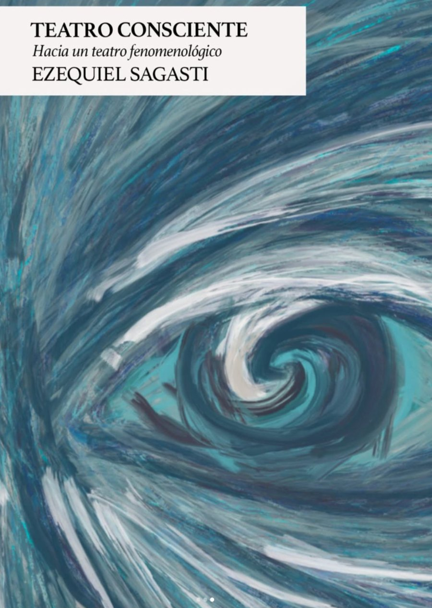

Para quienes empiezan de cero.
Trabajo de escena y texto.
Creación, investigación y montaje.
Fundamentos de actuación clásicos y método propio de imágenes resonantes.
Horas de vuelo reales en nuestro propio teatro.
Una red que se sostiene y acompaña a lo largo del recorrido.
Donde funcionan la escuela de formación actoral y nuestras propias producciones.
Contamos con boletería, un espacio social y una sala principal con capacidad para 50 personas.

A lo largo de más de diez años de investigación, Ezequiel Sagasti unió sus estudios en filosofía con el mundo actoral y desarrolló una metodología propia, basada en la fenomenología de la percepción y, particularmente, en el pensamiento de Maurice Merleau-Ponty.
Durante siglos el teatro partió de una premisa: actuar es representar. Este método parte de otra.
En lugar de fabricar la emoción desde adentro, el actor se abre a lo que pasa afuera —imágenes resonantes— y deja que la escena esté viva. El libro reúne ese recorrido y fue presentado en Buenos Aires y Madrid (2026).
Entrevistas y charlas con artistas, colegas y personalidades destacadas en nuestro canal de YouTube.
VER EN YOUTUBE ↗